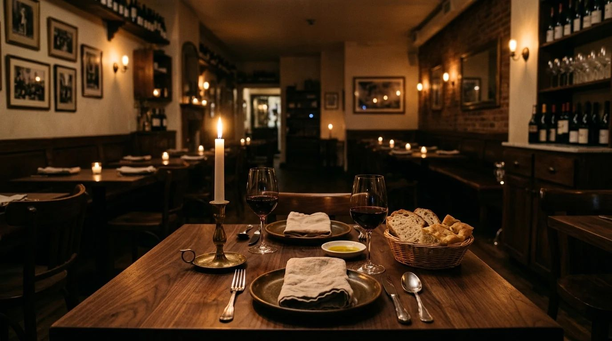

Cucina italiana a lume di candela
Pastas, risottos y pizzas de tradición, con producto fresco y fuego lento. Toca cualquier plato para ver su descripción completa.
Ver la carta
Filtrar:

Cucina italiana a lume di candela
Pastas, risottos y pizzas de tradición, con producto fresco y fuego lento. Toca cualquier plato para ver su descripción completa.
Ver la carta